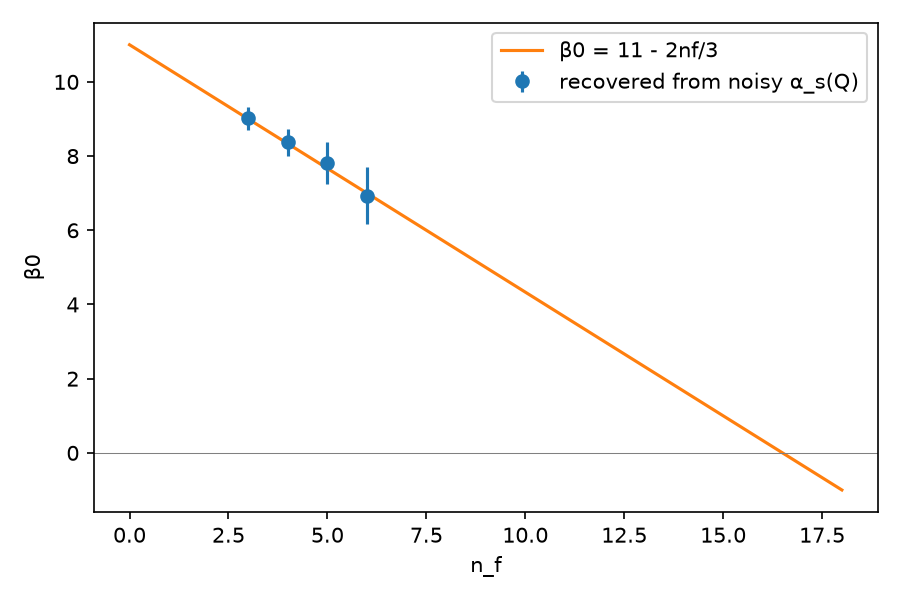

Senior Data Scientist · RAG · GraphRAG · LLM systems
From renormalization
to retrieval.
I trained as a physicist and now build retrieval systems that walk knowledge graphs to answer questions single-shot search can't reach, and measure every step. The graph below holds my projects, my work and my M.Sc. thesis. Ask it something.
Live demo · runs entirely in your browser
Ask my knowledge graph
Loading graph…
- Anchor
Find the things your question names: by name, then by meaning.
- Answer candidates
Only nodes reachable from the anchors, ranked by relevance, per distance.
- Meet in the middle
Grow half-paths forward from anchors and backward from answers, then join them where they meet.
- Rank
Score each path by how well its relations match the question; keep the top 5 with distinct endpoints.
Why meet in the middle?
Multi-hop questions fail single-shot retrieval because the answer sits several relations away from what the question names, and isn't textually similar to it. Enumerating every walk from the anchor explodes (thousands of paths at 5–7 hops) and drowns the right one. Searching from both ends only ever builds paths that connect an anchor to a plausible answer. On a 52,474-node graph this kept gold-path recall at 100% (vs 88.6%) with about 200× fewer candidates. The full method, with tests proving it equals brute force, is in graphwalk-rag.
Open source
Projects
4+ years · 3 in production GenAI
Experience
- Oct 2025 – now
Senior Data Scientist · Newgen Software
- Bidirectional graph search for multi-hop QA over a 52k-node knowledge graph: 47% → 53% accuracy, correct-path selection 39% → 72–84%.
- Single-first query router: 70.2% → 76.9% on 952 questions, with decomposition on only 18% of them.
- Layered graph over 371 regulatory documents (17k pages) for $35.1; on-prem Qwen3 + vLLM rebuild matched the cloud graph; Neo4j migration reproduced 25/25 results.
- Async inference platform (FastAPI, Celery, Redis): 7 NLP models at ~8,400 emails/hour/node, 28 models preloaded past the GIL.
- Oct 2023 – Oct 2025
Data Scientist · Newgen Software
- LLM guardrails: 25+ parallel scanners (injection, PII, toxicity, hallucination) in 1–2 s across 22 languages.
- Llama-3 distillation for text-to-SQL; evaluated 8+ compression methods (QLoRA, AWQ, GPTQ …).
- Jul 2022 – Aug 2023
Data Scientist · Number Theory
- 143-function feature library and PySpark models for a 5-product loan-risk scorecard.
M.Sc. Physics · NIT Calicut · CSIR-UGC NET AIR 81
Physics, done by code
My M.Sc. project was the renormalization of quantum electrodynamics. In qft-renorm-ai the code derives it from the Feynman rules in n = 4 − ε: gauge-invariant vacuum polarization, the Ward identity Z1 = Z2, and β(e) = e³/12π², with tests checking each result.
Then an AI experiment: sparse regression on the renormalization-group equation, fed noisy αs(Q) data, rediscovers β0 = 11 − 2nf/3 and places the loss of asymptotic freedom at nf ≈ 16.3 (theory: 16.5). It recovers the two-loop term only when the regression is given the form physics predicts. AI discovery needs the right inductive bias.
